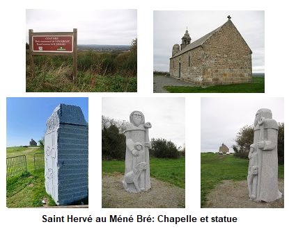
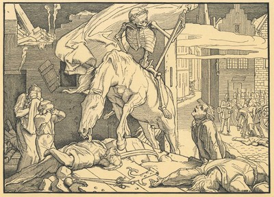
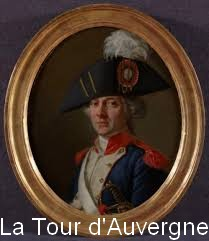
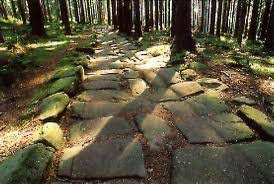
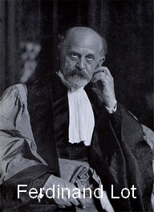
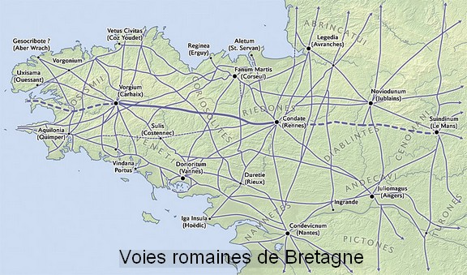
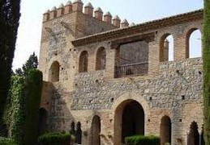
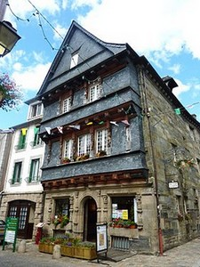
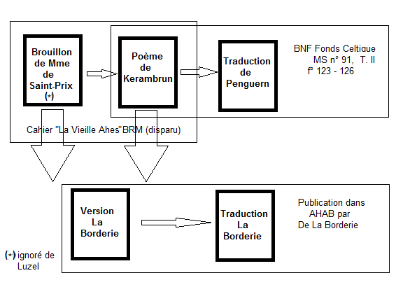

La route
L'article "chemin" du Dictionnaire français-breton du Père Grégoire de Rostrenen (1732) indique:
"Hent Ahès: Chemin d'Ahès, grand chemin pavé à trois rangs de pierres l'un sur l'autre, que la Princesse Ahès, fondatrice de la ville de Kerahès ou Carhaix, fit faire depuis cette ville, d'un côté, jusqu'à Nantes, de l'autre, jusqu'à Brest, et qui d'espace en espace, et en plusieurs endroits, retient encore ce nom".
Ce chant est donc celui des cantonniers occupés à entretenir l'antique route.
A ce chant répond celui du vieillard qui, comme celui d'un autre poème, « Le vieillard aveugle », bien loin de considérer pavage et désenclavement comme des progrès, met en garde contre les menaces qu'ils impliquent, dans ses imprécations qui alternent avec les encouragements que se lancent les cantonniers.
La montagne
Le "Ménez-Bré" est une colline des Côtes-d'Armor, vestige de la chaîne des monts d'Arrée, culminant à 302 mètres et coiffé de la petite chapelle Saint-Hervé. Outre Saint-Hervé qui aurait vécu au VIème siècle, le souvenir dâun autre personnage légendaire est attaché à cette « montagne », le fameux Guinclan, que le non moins fameux recueil Barzhaz Breizh appelle Gwencâhlan, un prophète dont parle le dictionnaire du Père Grégoire (1732). Est-ce le vieillard du poème? Plusieurs auteurs bretons, en particulier Anatole Le Braz, dans les "Contes du Soleil et de la Brume" (1905), se font lâécho de légendes qui situent sa tombe à lâintérieur du Ménez-Bré. De nos jours, cette « montagne magique » surplombe la RN12 à quatre voies qui relie Guingamp à Morlaix!

Photos: Jacqueline Philippe-Quentin (c) 2019

Comme on l'a dit, le nom de Carhaix - Caerahes a été compris très tôt comme une combinaison basée sur le préfixe breton d'origine latine 'Kaer' qui signifie 'lieu fortifié', et l'ensemble comme étant la 'ville fortifiée d'Ahès'.
 La ville d'Aëtius
La ville d'Aëtius
 Le Dictionnaire historique et géographique de la province de Bretagne de Jean Ogée, paru en 1778, dont la teneur fut collectivement prolongée et élargie par plusieurs auteurs en 1843, consacre, dans le tome I une dizaine de pages (pp. 139 149 de l'édition de 1843) à Carhaix et spécialement à l origine de ce nom.
A l'article "Carhaix" un contributeur fameux expose son point de vue : Corret de Kerbeaufret, plus connu, en raison de sa glorieuse carrière militaire, comme Théophile Malo de La Tour d'Auvergne (1743-1800).
Le 'Premier grenadier de France' refuse, on ne sait trop pourquoi, de voir en Carhaix "le chef-lieu des Ossismiens, connu sous le nom de Vorganium ou de Vorgium, dont parlent Strabon, Ptolémée et Pomponius Mela".
Il est plus fondé à contester l'opinion d Albert-Le-Grand, déjà mentionné, qui dans sa 'Vie des saincts de la Bretaigne armorique', publiée en 1637 à Nantes, attribue la fondation de cette ville à une princesse nommée Ahès. Selon une note en bas de page du dictionnaire, "Ahès ou Achée, [était censée être la] fille de Conan Mériadec, qui vivait dans le Vème siècle, pour d'autres, de Grallon, [laquelle] déshonora la cour de son père par ses débauches et attira l'ire de Dieu sur la ville d Is, qui fut dit-on, engloutie". Or, ajoute-t-il, "l histoire rejette aujourd hui avec mépris tous les contes et fables que nous a laissés cet écrivain auteur d'une Vie des saints de Bretagne..."
Il note qu en conséquence "plusieurs modernes ont été jusqu'à regarder Keraes comme le Keris des anciens. Ils se sont efforcés de rétablir sur la surface du globe une ville qui, depuis plusieurs siècles semblait en être complètement disparue."
Sans doute est-ce pour cela que la princesse pécheresse de cette légende maritime, Dahut, est parfois également appelée Ahès.
La Tour d Auvergne fait également un sort à la théorie du chanoine de Dol, M. Déric, qui prétend démontrer que Keraes vient d un mot celtique Kerc'heic qui voudrait dire perdrix, alors que c'est là le "cri qu on attribue à la perdrix, et non pas son nom". (p.141).
Son opinion est que " Keraes " , ville d Aes, est un nom qui rend hommage au fondateur de cette ville qui ne serait autre qu Aetius, le général romain vainqueur d'Attila aux Champs catalauniques (451).
Il évoque alors " les débris de la voie romaine, désignée dans la table de Peutinger, et que les paysans du pays nommaient Hent-aès, chemin d Aès [ ] Le vulgaire les appelle chaussées de Brunehaut ou les chemins ferrés ." La première désignation, explique-t-il, provient de Belgique où l on attribue la construction de semblables chaussées à la reine des Francs qui termina sa redoutable carrière attachée à la queue d' un cheval en 613. L'autre, fort mystérieuse, n'en est pas moins authentique et ancienne puisque nous l'avons rencontrée dans la "Chanson d'Aiquin", strophes 2 et 3.
La ville des minerais fondée par les Romains
A partir de la page 146, la thèse précédente est discutée par des rédacteurs modernes, continuateurs d'Ogée.
"Le nom de chaussée de Brunehaut est totalement inconnu chez nous. " [Mais] " la tradition qui attribue à la princesse Ahès la construction de ces voies romaines n'est [sans doute] qu une imitation, qu'une réminiscence de celle qui les attribue en Belgique à Brunehaut.
La ville ne fut pas fondée par Aëtius, mais par les Romains [en raison de] sa position au centre de la presqu'île. Abandonnée par les Romains, cette ville n'a dû prendre que tard son nom de KERAES, car le Ker n'a pas en Bretagne une haute antiquité ... Grégoire de Rostrenen traduit Carhaix par les mots 'Urbs Aesia' [dans lesquels] nous trouvons la véritable étymologie du nom qui nous occupe Aesia dérivant du substantif 'aes' qui en latin signifie généralement 'omne metallum', et ces mots signifient dès lors 'la ville aux métaux'. Carhaix a dû être l'entrepôt de riches mines du pays environnant. Un des chemins qui se dirigent sur Carhaix, traversant une partie des Côtes-du-Nord, porte le nom de "Chemin de l Aestrat" où 'Aestrat' [chemin du minerai] est un pléonasme local "
La ville des routes
 Pages 148 et 149 du même dictionnaire, une autre note signée Louis Jacques Marie Bizeul (1785-1861), nous rapproche bien d'avantage de ce que l'on considère désormais comme l'étymologie exacte de Carhaix:
Ce qui frappe surtout à Carhaix, c est le grand nombre de voies romaines qui en sortaient dans toutes les directions Nous trouvons sur l une d elles, à peu de distance de Carhaix [donc avant son déplacement] une colonne milliaire érigée sous Septime Sévère [l'inscription était encore lisible !], c est- -dire 200 ans au moins avant Aëtius... [lequel] n'a pu fonder une ville sur laquelle se dirigeaient des routes si longtemps avant lui. On connaît neuf de ces voies...
Suit une description détaillée de chacune des neuf voies.
A propos de la 5ème voie, celle de Carhaix à la Pointe du Raz ou Cap-Sizun, il cite, d'après le président de Robien le 'Manuscrit sur la Bretagne' du chanoine Moreau (XVIème siècle) :
Le chemin qui va depuis Carhaix jusqu'à Poul-Davy, dit-il, est appelé Hent-Ahès. De là il s'étend jusqu'à la baie des Trépassés, entre Saint-Tary et la Pointe du Raz. Dans les lieux où ce chemin se fait encore voir en entier, surtout vers la Baie des Trépassés, où il aboutit jusque sur les bords d'une rive escarpée au-dessus de la mer, on découvre la largeur de ce chemin qui est d'environ 70 pieds. Il est pavé de grandes pierres de taille. Bizeul ajoute: "Cette voie doit nécessairement conduire à un endroit de la côte où les Romains avaient fondé, soit un port, soit une ville et peut-être nous faire découvrir quelque chose de positif sur cette ville d'Is qui a donné lieu à tant de controverses .
A propos de la 9 me, la Voie de Carhaix à Erquy, il note qu elle passe près de la chapelle de ND de Kerhir près de Plounevez-Quintin, à proximité de laquelle il a trouvé en 1835 le tronçon brisé d'une colonne milliaire. "Sur [celui-ci, indique-t-il] les surnoms d Adiabenicus et de Parthicus m'ont fait reconnaître Septime Sévère à son 2ème consulat... Les lettres de l inscription étaient de la plus belle forme romaine. Un cantonnier venait de macadamiser ce précieux morceau d'antiquité. Je recommandai le tronçon au maire de Plounevez qui m'accompagnait et il l'a, en effet, recueilli dans la salle de la mairie..."
C est ce même Bizeul qui donna la première interprétation de l'inscription sur la borne de Maël-Carhaix (différente du tronçon brisé de Plounevez), comme on peut le lire dans le Kaier ar Poher N° 65, p.10.
La ville des Osismes
 Dans un article très détaillé intitulé "Le roi Hoël de Kerahès, Ohès le vieil barbé, les "chemins d'Ahès" et la ville de Carhaix", publié dans la revue Romania, tome 29 N° 115, pp.380-402, en 1900, le médiéviste Ferdinand Lot, propose une autre étymologie qui semble particulièrement solide.
Auparavant, il éreinte son colègue La Borderie qui ne doute pas de l'authenticité du poème de la Vieille Ahès publié, on s'en souvient, par ses soins en 1861. Cet auteur naïf qui "n'a pas la plus légère idée, cela va de soi [!], de la critique des traditions populaires" avait déjà pris pour argent comptant des forgeries fabriquées par La Villemarqué, le "Tribut de Numinoe" et "Alain (Barbetorte) le Renard". A présent, sur la foi d'un autre pastiche, le voilà qui échafaude une théorie fumeuse où "Ahès" est le nom de code par lequel le peuple désigne la "domination romaine dans les Gaules", un nom comparable à la "Rébecca des Gallois... ou à la sinistre Marianne qui traîne encore parmi nous...".
A propos de méconnaissance de "la critique des traditions populaires", on est tenté de retourner le compliment à Ferdinand Lot qui écrit p. 382, en parlant d'Ahès: "Elle entassait les bâtisses, châteaux, palais et routes, s'imaginant ne jamais devoir mourir". La tradition telle qu'elle s'exprime dans la chanson d'Aiquin et dans l'oralité bretonne, lie le nom d'Ahès, principalement sinon exclusivement aux routes qui sillonnent la contrée...Cependant il est parfaitement fondé à reconnaître (p. 385) dans cette légende l'archétype du personnage qui fait l'expérience de la vanité des choses humaines. On le retrouve dans les récits de la vie du Bouddha et dans le roman chrétien de "Barlaam et Joasaph" (qui venait juste de faire l'objet d'une étude sur "Saint Josaphat" par le philologue romaniste Gaston Paris).
Lot réfute également comme "un raisonnement [qui] ne tient pas debout" une autre hypothèse du malheureux La Borderie qui suggère que "Carhaix tirerait son nom de Car-hays, localité de Cornwall" (Cornouailes britanniques).
Vient ensuite un exposé sur la matière de Bretagne ou apparaît Hoël, roi de Kerahès (et père de la deuxième Iseut dans le roman de Tristan); sur une identification probable de ce personnage avec la chanson de geste carolingienne, Ohès, seigneur de Carhaix, évoqué ci-dessus; et sur les liens de ces figures littéraires avec Ahès la batisseuse de routes de la légende locale.(cf. article de Goulven Péron déjà mentionné).
Enfin après de longues pages qui témoignent de la profonde érudition de leur auteur, on en arrive à l'étymologie de Carhaix (p.397-399). Elle se fonde sur des notes sténographiées contenues dans des manuscrits des IXème et Xème siècles publiées par M. Bourquelot dans l"Annuaire de la Société des Antiquaires de France", 1851, p. 265-293. Il s'agit d'une liste de noms antiques de villes où chacun est précédé du nom du peuple qui l'a remplacé. F. Lot date cette liste du VIème siècle, époque où les noms antiques des villes tendaient à se perdre. "Or sous le n° 63-64 on trouve 'Othismus Vorgium". L'historien en déduit:" Ainsi, au moment où les Bretons arrivent en Armorique, la capitale des Osismii ne s'appelle plus Vorgium ou Vorganium... mais Osismii ou Osismios"...Il est évident pour moi que Carhaix, Caer-Ohès est tout simplement la transcription bretonne de CIVITAS OSISMIORUM. Ohès représente en breton Osismii ou Osismios".
Selon lui, les règles de la phonétique qui voudraient que certaines lettres se soient conservées ne sont pas un obstacle sa démonstration.
Corophesium, la ville carrefour
 Les historiens et philologues contemporains ne sont plus de cet avis, étant entendu que, désormais, l identification de Carhaix avec la capitale de la cité gauloise des Osismes, Vorgium, ne fait guère de doute.
Au haut Moyen âge, tandis que la localité proche, Plouguer, donnait son nom à un pagus, le Poher, la civitas des Osismes était démantelée et son ancienne capitale était devenue sans doute le lieu où séjourna le roi carolingien Louis le Pieux (ou le Débonnaire) en 818, appelé Corophesium dans le manuscrit des Annales de Lausanne. Le linguiste et historien Léon Fleuriot (1923-1987) dans ses Origines de la Bretagne (Payot, 1980, p. 33) fait ce rapprochement du fait que ce roi rencontra à cette occasion l'abbé de Landévennec à Briec, à une quarantaine de kilomètres de Carhaix. Le texte visé "...super fluvium Elegium juxta silvam quae dicitur Brisiaci.." se rapporte d'ailleurs plus sûrement à Priziac où il existe une chapelle Saint-Guénol et se lit sans doute "...sur l'Ellé, près de la forêt de Priziac. On se rapproche ainsi de Carhaix.
Quant à Corophesium , il s'agirait de l'écriture fautive d'un nom, (peut-être Carofes, comme pour Charroux dans la Vienne), issu du latin quadruvium , carrefour, qui décrit assez précisément la situation de cette ville. Ce nom a donné les désignations modernes: Carhaix en français et Karaes en breton (aujourd hui "Kara Plou" pour Carhaix-Plouguer).
Une analyse précise de ce sujet a été faite par l historien Bernard Tanguy (1940-2015) dans les Dictionnaires des noms des communes du Finistère , chez ArMen-Le Chasse-Marée, à l'article Carhaix-Plouguer.
Ce nom breton apparaît pour la première fois, orthographié Caerahes, au XIe siècle dans une charte signée par le comte de Cornouaille, Hoël (mort en 1084). Cet acte, établi entre 1081 et 1084 avait pour but de " faire don d'une villa située près de Caerahes, dans laquelle se trouve l'église de Saint Quigeau (sanctus Kigavus) ." Le bénéficiaire de la donation était l abbaye de Quimperlé. Cet acte figure dans le Cartulaire de Quimperl ( éd. L. Maître et P. Berthou, Paris, 1896, N XXXVIII).
Ce passage de Vorgium à Caerahes est contraire à la règle qui vit aux IIIème et IVème siècles les chefs-lieux de cités adopter le nom du peuple dont ils étaient la capitale: Chartres était celle des Carnutes, Corseul celle des Coriosolites, etc. Si le nom des Osismes n'apparaît pas dans "Carhaix", il survit peut-être dans celui de "Brest".
La Princesse Galiana et Merlin
Cette figure légendaire d Ahès issue d'une étymologie populaire n'est pas un cas isolé.
 Un autre exemple de nom d'ancienne voie romaine à l'origine d'une légende locale est le Palais de Galienne à Tolède, qui joue un rôle important dans une chanson de geste du XIIème siècle intitulée 'Mainet'. Ce poème narre les aventures de jeunesse attribuées par la légende à Charlemagne, et notamment son exil en Espagne, pour échapper à ses deux demi-frères.
Il accomplit bien des exploits et obtient la main de la belle Galienne, la fille de Galafre, le roi maure d'Espagne.
Or, il existe effectivement à Tolède, un peu à l'écart de la cité, un bâtiment appelé "Palais de Galiana". Selon l'historieé espagnol Menéndez Pidal (1869-1968), ce nom de "Galienne" n'était pas celui d'une femme en particulier, mais "senda Galiana" désignait la "Via Galliana", c'est à dire, l'ancienne route romaine reliant Tolède et son palais "aux Gaules", c'est- -dire à la France.
De la même façon, le nom gallois de Merlin, "Myrddin" emprunté aux 6 poèmes pré-Galfridiens (antérieurs à Geoffroy de Monmouth; on les date du 10ème ou du 9ème siècle) attribués au barde de ce nom du fait qu'il y prend la parole à la première personne, semble transposer dans le domaine gallois une tradition sur laquelle s'appuie ledit Geoffroy de Monmouth (1095-1155) dans sa Vita Merlini (Vie de Merlin) que l'on date de 1149.
Celle-ci faisait du protagoniste de récits d'origine écossaise sur le thème de l'homme sauvage aux dons de prophète, un soi-disant héros local, éponyme de la ville de Carmarthen, "Caerfyrddin" en gallois. Il s'agissait d'une fausse étymologie: [Caer]-myrddin était connu à l'époque romaine sous le nom celto-latin de "Moridunum", forteresse maritime.
Comme dans notre "Châteaudun", la cité fortifiée est désignée par deux mots différents dans le même nom: 'Caer' (breton 'Ker') qui comme 'château' provient du latin 'castrum' ou de son dérivé 'castellum'; et 'dunum', mot purement celte ayant à l'origine la même signification qui avait fini par ne plus être comprise.
Que Geoffroy ait opté pour la forme Merlinus dès ses premiers écrits, Prophetiae Merlini et Historia Regum Britanniae, (Prophéties de Merlin et Histoire des rois de Bretagne) rédigés entre 1134 et 1138, indique peut-être l'influence d'une autre tradition à laquelle s'est surimposée à celle de Carmarthen.
Conclusion
Certains verront dans le repli et le refus d'ouverture sur l'univers qui s'exprime dans "Ahès" et dans la tradition dont ce chant procède, la conséquence des souffrances endurées par le menu peuple des campagnes et des villes de Bretagne, du fait de la venue de gens d'armes honnis et des pillages subis lors de conflits majeurs: guerre de succession de Bretagne, guerre de Cent ans, guerre de la Ligue...
D'autres pourront y voir, au second degré, une exhortation au retranchement dans une identité régionale sublimée par un passé fantasmé, identité qu'il convient de préserver de contacts aussi impurs que dangereux! C'est sur l'exaltation d'une telle attitude que s'achève le Barzhaz Breizh (p. 534 de l'édition 1867) qui invite le peuple breton à demeurer "...retranché dans ses moeurs nationales comme dans sa presqu'île; défendu par sa langue et par son caractère; fidèle aux souvenirs et aux traditions du passé..."
Ahès, Galiana, Merlin...Ces exemples ne sont sans doute pas les seuls et la liste des héros légendaires qui naquirent de l'étymologie populaire d'un toponyme devenu incompréhensible ne s'arrête certainement pas là . Mais, à n'en pas douter, le cas de Carhaix est unique : c est le seul où la qualité qu'exprimait le nom original, à savoir l accessibilité remarquable d une cité située au carrefour de grandes routes, est remise en question et dénoncée dans un poème qui énumère les souffrances et les drames auxquels on s'expose en voulant à nouveau y tendre.

|
Ahes Highway
The article "way" in the French-Breton dictionary composed by the Rev. Gregory of Rostrenen in 1732 reads:
Hent Ahès: "Ahes Highway" is a three layer paved roadway built by Princess Ahes who founded Kerahes viz. Carhaix, to link this town with Nantes on the one hand, and Brest on the other hand. This denomination is still in use from place to place.
This song is, consequently, sung by the roadmenders who are busy restoring the ancient road.
It is is echoed by the old man who, like his counterpart in An den kozh dall, far from considering this opening up to the outer world a progress, points out in his curses alternating with the road builders' cheers, the dangers it implies.
Is this a forgery? François Vallée's opinion
In the preface to "Dastumad Penwern" (The De Penguern Collection published in 1983 by Dastum) there is a long account (in Breton language) by François Vallée (1860 -1949, a linguist who composed a famous dictionary) concerning Guillaume-René Kerambrun. It was published in "Studi hag ober" (N 12, 1940) by the grammarian and poet Maodez Glanndour (alias the Reverend Pierre Le Floch, 1909 - 1986):
"Included in the De Penguern song collection is a roughbook titled "The Hag Ahès". It is not deposited at the Bibliothèque Nationale, but at Rennes University Library. It was discovered in Durance antique bookshop. They made me a gift of this document, that I gave to the Rennes University Library, along with other fascicles missing in the De Penguern Collection that were kept at Durance's. It seems that the roughbook "The Hag Ahès" contains a first draft of the song as jotted down from somebody's singing by Mme de Saint-Prix, intertwined with a transcription by Kerambrun.
I published in the "Memories of the Breton Association" and in the magazine "Kroaz ar Vretoned" part of the songs discovered at Durance's. Yet I did not include "The Hag Ahes" on account of its uneasy deciphering. Kerambrun was suspected of having written himself the whole song. It seems beyond doubt that he had to rewrite part of the verses that were too confused in the draft of Mme de Saint-Prix.
About Kerambrun, who acted as a secretary helping de Penguern with his collection, I know nothing, except that he was repeatedly charged with forgery, an unwarranted reproach in my opinion. He was a relative to Denis Kerambrun, a solicitor at Belle-Isle-en-Terre whom I often heard deservedly praising the merits of this relation of his who, I am afraid, sometimes just acted a bit thoughtlessly".
In his doctoral thesis- downloadable online since July 2013 - M. Yvon LE ROL states: " A new copy of this ballad was discovered recently (early 2012), in the archives of the "D partement" C tes du Nord (shelf tag: 85J119) by M. J r me Caou n, while investigating the Kerouartz family collection. There is no noticeable discrepancy between it and the De Penguern MS version: numbers of lines and stanzas are equivalent. Only in handwriting and/or spelling do they differ. In the view of M. Caouën, Frédéric de Kerouartz who had added margin remarks and comments could have committed the song to writing."
The collector, Mme de Saint Prix
Madam de Saint-Prix (1789 - 1869), née Emilie-Barbe Guitton was originating from Callac (near Vannes). She married Charles de Saint-Prix in 1816 and spent a lifetime in the Morlaix area. Many are those who bore witness to the eclectic hospitality of her salon where mixed together "Legitimists, Republicans and Orleanists" and as well a "general in evening dress" as a "farmer in frieze clothes", so said the Reverend Kerzalé in the funeral oration he delivered in praise of her.
A perfect Breton speaker, she may have started her collecting in 1820, possibly prompted by the grammarian Le Gonidec (1775-1838), who was a friend of her husband's.
She made no attempt at publishing herself her investigations but allowed other collectors to avail themselves of them : La Villemarqué admits that he was "set on the track of the poem about Merlin, by Madam de Saint-Prix, who was kind enough to contribute some fragments sung in Tregor". Anatole Le Braz states on the other hand that " Madam de Saint Prix often said to my father that she had helped M. de La Villemarqué to many Breton laments".
The writer Chevalier de Fréminville (1787 -1848) hints in his narrative "Antiquités bretonnes" (1837) at pieces she had contributed.
But it was De Penguern who most gained by her exertions when she gave him the greatest part of her collection that was to become MS N° 92 in the stocks of the Biblioth que Nationale.
Guillaume-René Kerambrun (1813- 1852)
He was born at Bégard (between Lannion and Guingamp, studied laws in Rennes, founded a theatre magazine, published poems and became a writer of renown. He helped, furthermore, J.M. de Penguern with his collection of folk songs, but he is suspected of having composed himself a few pieces (the best ones!)
However, the historian Arthur de La Borderie (1827 - 1901, the author of the imposing "History of Brittany") defended the genuineness of the "Hag Ahès" and the " Stamped paper Dance" songs against Luzel's and Le Braz' charges, as well as La Villemarqué's insinuation concerning the second song. More recently, the musicologist Donatien Laurent took sides with Kerambrun's defenders as he considers as probably genuine two other songs incriminated by Luzel: "The wolves of the sea" and "Raid of Saxons" (Argadenn ar Saozon).
A princess or a giant hag?
The nefarious character referred to in this song is likely to be the alleged eponymous figure of Carhaix town.
The geographer Jean Og e (1728 -1789), who wrote a "Geographic Dictionary of Brittany" and an "Atlas - Itinerary of Brittany", does not believe in the existence of Is. He remarks that in some people's opinion Is was the inland town Carhaix (Kera s in Breton): Keraes was the Ker-Is of old. Before him Albert Le Grand had already connected the name "Ahès" with this town, as he had ascribed its foundation to a certain Princess Ahès.
In fact (according to M. Bernard Tanguy) both the Breton "Kerhaes" and the French "Carhaix" are for an old "Carofes" prolonging the Latin "Quadruvium", crossroads. The latter had early replaced "Vorgion", the previous name of the main town of the tribe Osismii. The town Charroux in the d partement Allier has the same etymology.
The "Guide de la Bretagne mystérieuse - Finistère" (Tchou 1966) asserts that "old established tradition [in the Carhaix area] sees in Ahès a legendary princess (or goddess) who may be traced in several places of the Breton inland: a hamlet named "Carhaix" between Rohan and Bréhan-Loudéac, a "Corn-Carhai" on the Portsall rocks near Ploudalmézeau and a township "Caraës" on Ushant Island. The mid 17th century lawman Eguiner Baron referred to this tradition when he wrote:
Exstat oppidum in comitatu Cornualensi Armoricae Britanniae, ab Ahae gigantis feminae nomine appelatum Ker-Ahez, quod verbum sonat Villa Ahae, i.e.
There is in the county Cornouaille, in Armorica, a fortified place named after the gigantic woman Ahès, as "Carhaix" means "town of Ahès".
It is remarkable that this text should make of the princess a giant...
Old Oh s' wife
However there is a by far older chanson de geste, the Song of Aiquin (or Aquin), whose original was very likely composed between 1170 and 1190 and which is, to be sure, the oldest still extant literary Breton work written in French. It features Charlemagne fighting against the "Saracens", i.e. the pagan Normans whose king is the Aquin (Haakon?) in the title of this lengthy poem. One of the companions of the emperor is named Old Oh s (a variant to Ahès). What he tells about his wife is evidently derived from the tale of the Roman highway known as "Hent Ahès".
They praised Ohes a great deal, all of them,
Who had proved so brave on that occasion,
Far o'er a hundred and forty years old
He was. Of his wife did the French oft speak
Who they knew had been both wise and charming;
So they inquired from him and asked him
Where she was born and who were her parents.
Ohès said : Nothing be concealed from you!
She was Courseul s much cherished daughter.
He was o er three hundred years when he died;
So that this dame had the insane idea
That she would be young and fair forever!
A long iron-wheeled car way she ordered
To be made that would lead to Paris town,
Out of her country surrounded by woods;
In the town of Carhaix, to tell the truth,
Was the highway s start point and inception
Many an oak was felled by this lady
As well as many a tall branched tree.
When the finished portion was measured,
It had a length of over twenty leagues,
A short lapse of time, but many workers!
Now I ll tell you how it came to an end:
The lady once picked up a dead blackbird.
Passed it from one hand into the other.
Then the poor lady has given a sigh:
Is in this world everything but vain?
The more you live, the more you must suffer;
The richest man can't shun adversity!
And the sad lady has wept a great deal.
Thereupon she has summoned a clerk
Who was a teacher of theology,
She inquired from him and asked him
If one could die without being killed
Or ill-used or wounded or stabbed.
|
He said: Yes, Milady, to speak the truth!
Whoever was born by mother will die
And no one is excepted from that rule
Or is allowed to keep their riches
Or any good that they had gathered:
No borough, no town, castle or city,
No gold, no silver, no coined penny,
No silk or damask cloth whatsoever,
None of the things that God has created:
That is the way the Lord has directed.
- O woe is me, says she, why were we born?
I don't rate myself a coined penny.
Nor do I my riches and great power.
I have no great opinion of myself!
Now, never shall the highway be finished
I do regret the work put into it!
Nevermore shall I have a hand in it
Or any work. It would be a folly
A crushed garlic clove, that s what this world s worth!
She did abide by it. As I told you,
Lords and Barons, declared the Old Oh s,
The said lady lived to be far over
A hundred years old. Then the lady died.
Never after did I marry again.
Never ever shall I, given my age,
For I am quite an old and weary man
Who long ago from woman s blood was born.
No woman will ever love an old man,
Who cannot satisfy her lust fully;
When growing old men get colder,
While a young wife to tell the truth
Oft catches fire, her special gift,
Both will hardly fit together.
|
Another instance of a local tale arisen from the name of an ancient Roman highway is addressed in connection with Michel Galiana's poem, Galiana's Palace
Furthermore, the Welsh name of Merlin, "Myrddin", borrowed from the 6 "pre-Galfridian" poems ascribed to the Bard of that ilk, seems to have its similar origin in a tradition Geoffrey of Monmouth was aware of. According to it, the protagonist of the tales, of Scottish origin, of the wild man with prophetic gifts, was supposed to be an eponymous local hero who gave his name to Carmarthen, in Welsh "Caerfyrddin". It was a false etymology, since [Caer]-myrddin was known in Roman times as "Moridunum", sea-fortress (hence "Myrddin").

|